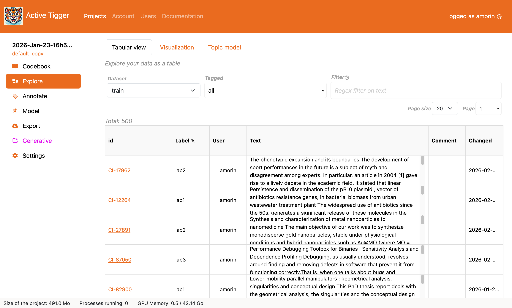
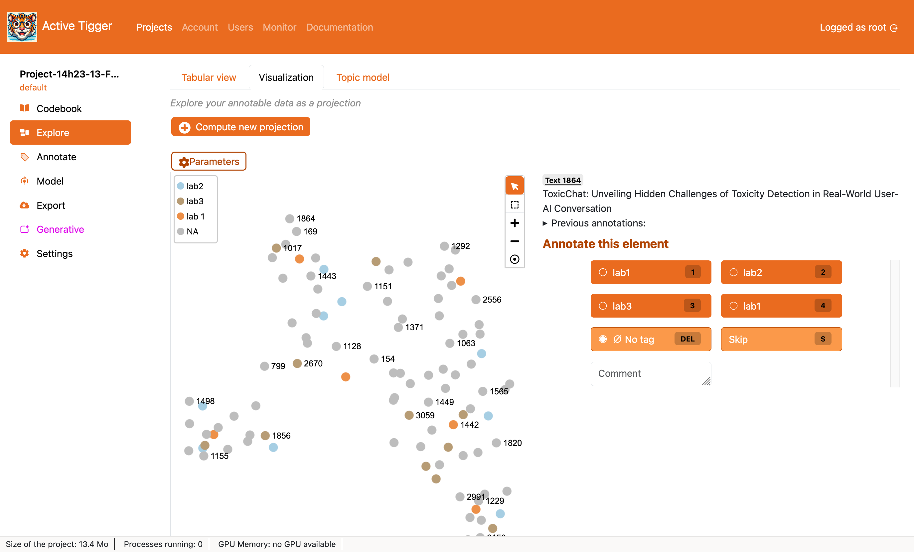
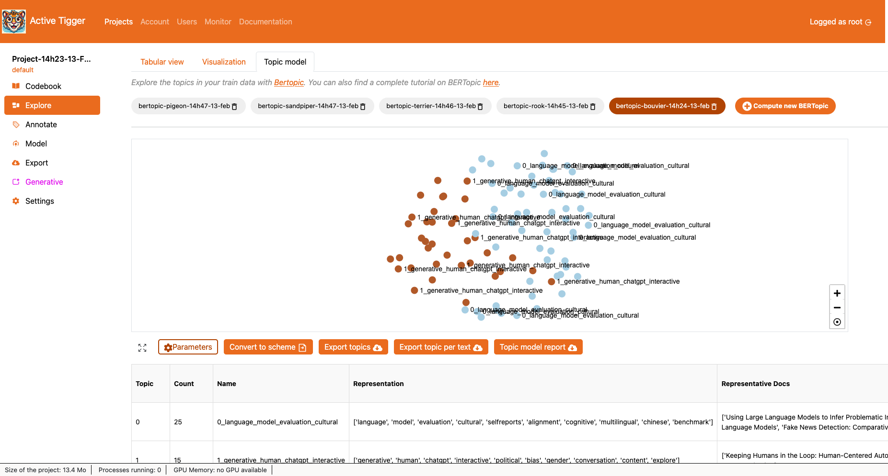

Explore Page
This section describes each of the three tabs found in the Explore Page.
Tabular View
The tabular view allows you to explore your data in a tabular view. The first section allows you to select a subset of your corpus and update display settings. The second section is a table with the content of your corpus.

- Select a subset of your corpus
- Select which dataset to explore ("train", "valid" or "test").
- Select elements with a tag.
- Select elements given a regex query.
- Display settings:
- The number of elements per page.
- The page number.
- The table: The table contains 6 columns including the id, the label, the user who produced the label, the text, any comment and the date the label was produced.
- Clicking on the id, you will be redirected to the Annotate page to annotate the element clicked.
- Clicking on the label, you can change the label in the tabular view. To save changes in the database, you need to click the button "Validate changes".
Visualization
The visualization tab allows you to compute a projection (what is a projection?) with either UMAP or t-SNE. Once a projection was computed, it will be displayed underneath. There is only one projection per project. If you compute a new projection, you will overwrite the current projection.

- Clicking Compute new projection opens a modal with a form. You can choose the sets of features (what are features) to use, and parameters for the dimension reduction algorithm of your choice
- Select a feature: You can choose as many sets features as you like. Choosing several sets of features, for each text input, the features will be concatenated. You can also create new features, opening the modal Compute new features.
- Advanced parameters:
- if you choose the UMAP algorithm:
- if you choose the t-SNE algorithm:
- perplexity: XXX
- learning rate: XXX
- init: XXX
- perplexity: XXX
- Feature scaling: this is a method normalizes the range of independant variables (i.e. each feature) (should I scale my features?).
- Clicking Parameters opens a modal with the parameters of the current projection.
- The visualization panel displays each text input in a 2D space. The color of the node depends on the label, of the absence thereof. You will find several control buttons to navigate (), zoom in (), zoom out () and recenter the graph ().
- Clicking the frame button () allows you to select a subset of text inputs, and removes the selection.
- If a frame exists, you can choose to Lock the selection , going to the Annotate page you will only see elements in this selection frame.
- Clicking a node, you will see the text input appear, as well as the previous annotations and the Annotation Panel, much like in the Annotation page
Topic model
The topic model section allows you to easily run a topic model (what is a topic model?) with BERTopic1. The first section allows you to select an already fitted topic model, or compute a new one. The second section allows you to visualise the clusters and interact with it. Lastly you can read topic descriptions in the table at the bottom of the page.

- The menu displays all topic models associated with the current project (and user ??? XXX). Each model can be deleted with the
 . Clicking Compute new BERTopic opens a modal with a form to create a new topic model with the following parameters :
. Clicking Compute new BERTopic opens a modal with a form to create a new topic model with the following parameters :- Name: must be unique (with regard to? unique at all or unique per project ? unique per project per user? )
- Embedding model: choose from the available embedding models to compute the embeddings that will be used for fitting the model. These embeddings will be computed if they do not exist already for a given dataset.
- Number of neighbours: UMAP parameter — a dimension reduction algorithm; low values will generate a topic model focusing on local structures (i.e. very specific topics) whereas higher values will generate a topic model focusing on the global structure (i.e. global topics) (more here).
- Min topic size: HDBSCAN parameter — a clustering algorithm —, this parameters correspond to the minimum number of elements in a group to be considered a cluster, otherwise the group is considered as noise. Increasing this value will generate few large groups; decreasing this value will generate many small groups.
- Advanced parameters:
- Outlier reduction: If set to True, all text inputs considered as noise will be added to the closest topic (more info).
- Force compute embeddings: If set to True, the app will first generate the embeddings, even though they have been generated in the past.
- Input dataset: What dataset should be used to fit the model (train, train + test + valid or the complete dataset uploaded to the project).
- Filter out texts of length lower than: Before fitting the model, exclude text inputs of length inferior to this value.
- Number of components: UMAP parameter — a dimension reduction algorithm; it defines the number of dimension the algorithm reduces the embeddings to. Low values will flatten the representation of the input texts, whereas higher values maintain a richer representation (more here).
- The visual representation of the topics displays each text input as a node with a color corresponding to the topic generated by the topic model. The controls are similar to those in the Visualization tab. Clicking on a node displays the text input.
- Several interactions are made possible suc as:
- expands the visualization panel.
- Parameters: Display the parameters of the current topic model in a modal.
- Convert to scheme: Creates a scheme and assigns label using the topics generated. XXX Add NOTE REGARDING THE DANGERS OF DOING THAT
- Export topics: Download (csv file) the topic table as displayed underneath.
- Export topic per text: Download a mapping of each element id2 to a the topic index.
- Topic model report: Download an HTML report with key insights (topics description, 2D map, hierarchical representation, representative documents and the parameters of the model).
- The table (downloadable with Export topics) summarises the topic model by providing:
- Topic: the topic id.
- Count: the number of elements in the topic.
- Name: A standard name for the topic.
- Representation: A list of keywords that represent the topic.
- Representative docs: A list of documents that are at the core of the topic generated.
-
Find a full tutorial on BERTopic for the social science here. ↩
-
As set up when creating a project. ↩